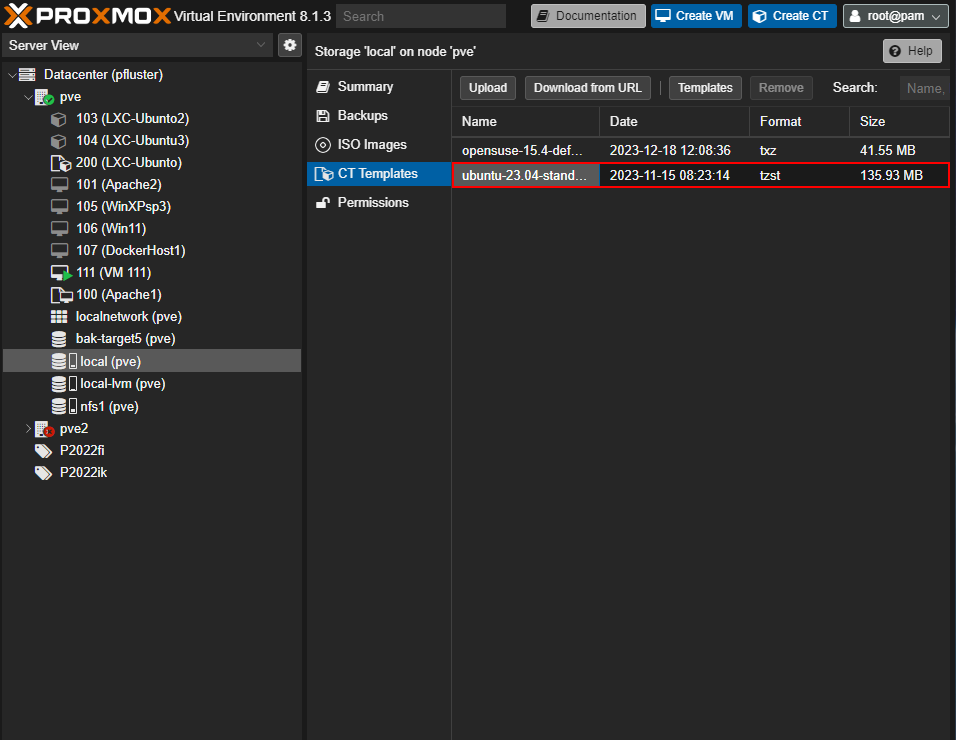
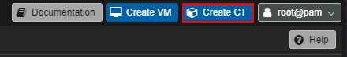
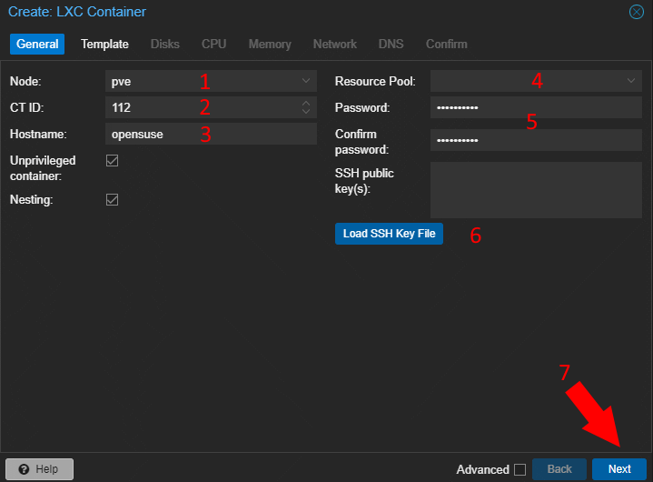
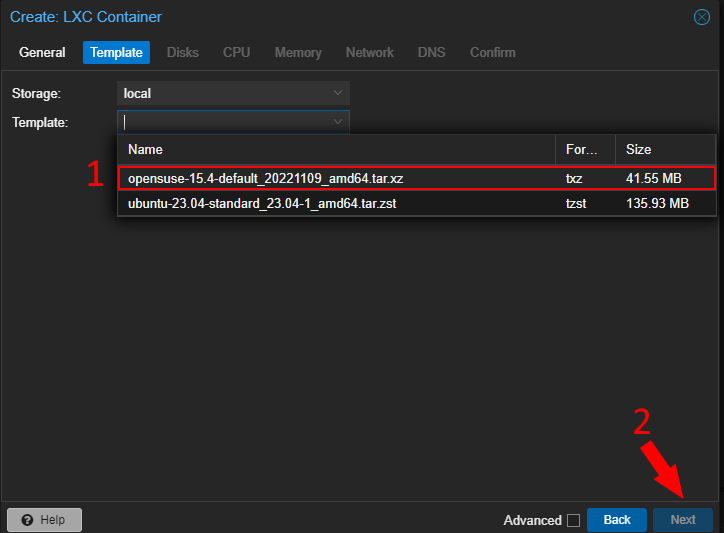
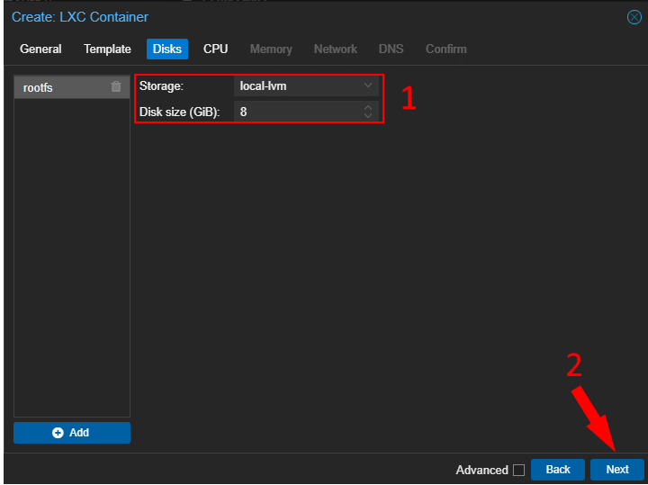
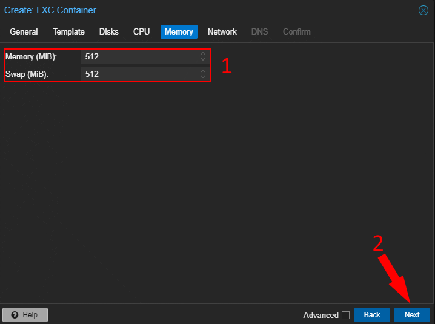
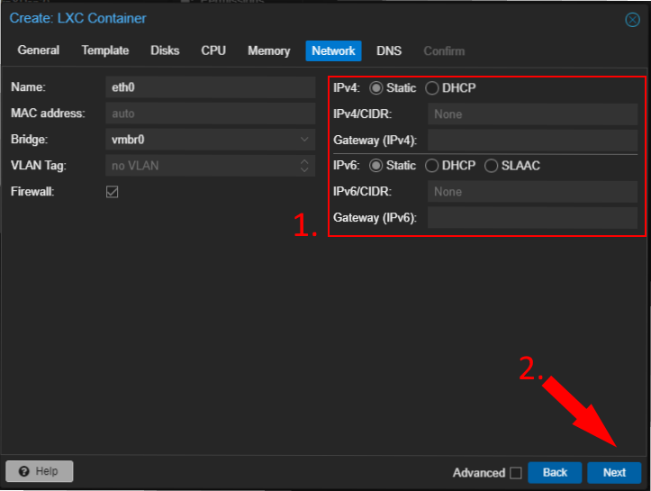
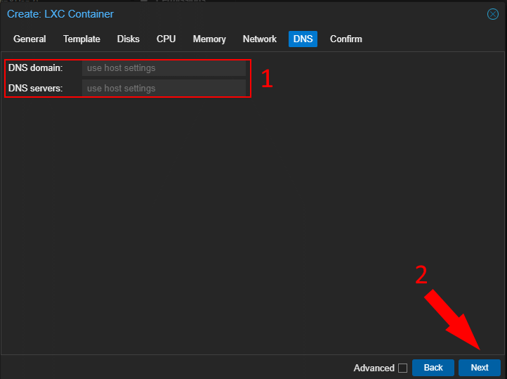
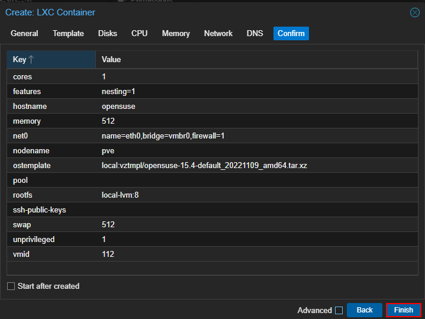

Zum Erstellen eines Containers benötigen wir ein Template.
Dieses kann vom lokalen PC, über den Button Template oder über die URL in Proxmox geladen werden.
Gewünschten Node auswählen und unter 'local (pve)', 'CT Templates' eine der drei Möglichkeiten zum hochladen eines Templates wählen.
Nach dem Download erscheint das Template hier:

Neben dem Button 'Create VM' auf 'Create CT' drücken:








Der Container sollte jetzt im node auftauchen und kann durch einen Klick auf 'Start' gestartet werden